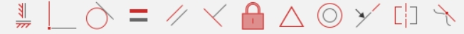
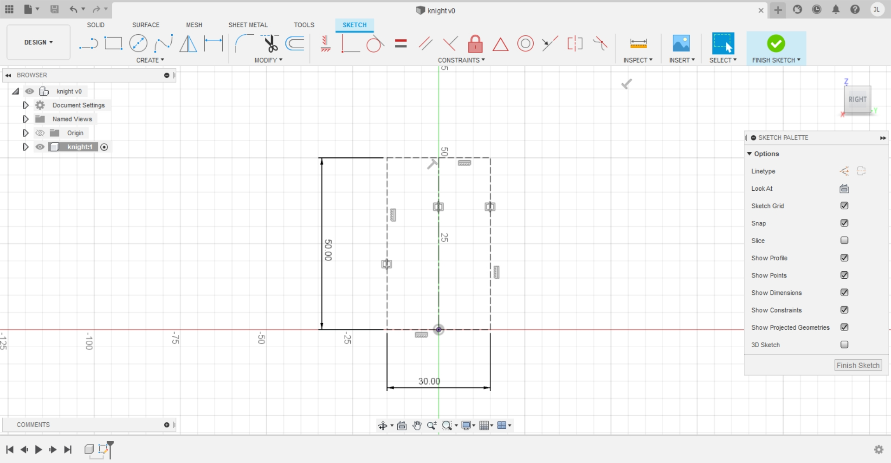
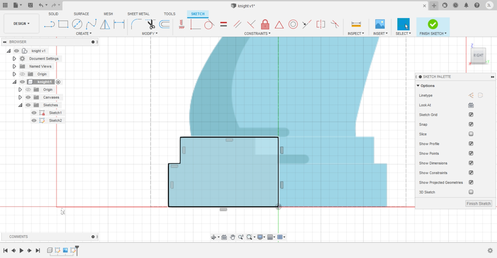
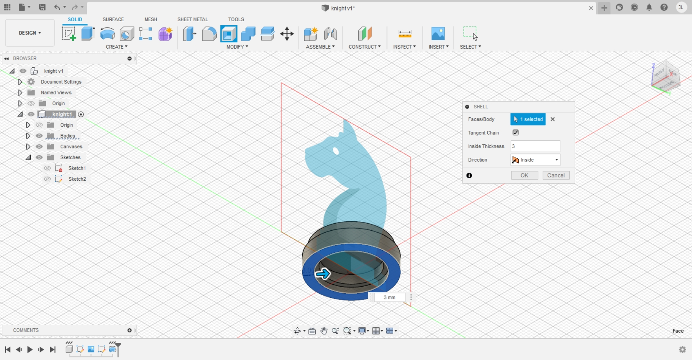

3D Modeling
3D modeling is the process of using 2D sketches to create a 3D model in
the form of a body in a component. In Fusion 360, we have to make sure
that the 2D sketches are fully constraint, meaning that the lines are
black in colour, and fully dimensioned, only then can we use features to
create our 3D model.
Constraints

Here are all the constraints in Fusion 360 and they are used in different
scenarios and are helpful in preventing the sketch from being changed
accidentally.
Extrusion
Exercise 1: Name Tag
Step 1: Creating a 2D sketch of the name tag
I created this sketch on the x-y plane with the corresponding dimensions and
constraints meeting the requirements of length 70mm and width 30mm with
a rim ring hole of 4mm, all of it surrounded by a rim 1.5mm thick.
Step 2: Extrude the rim

I extruded the rim to a height of 4mm which is the required height of
the name tag.
Step 3: Extrude the base
Next, I extruded the main base to a height of 1.5mm as required.
Step 4: Creating a 2D sketch of my name
With the final feature, my name, I sketched it using the text feature
starting from the top surface of the rim as the sketch plane, making
use of Arial font, making it bold with a height of 12mm and center aligned
both vertially and horizontally. My name is also offset 10mm from the
center of the ring hole.
Step 5: Extrude the 2D sketch of my name
Finally, I extruded the 2D sketch of my name to the surface of the main
base with an offset of -0.5mm.
Final model
Exercise 2: Lego Brick
With reference and guidence from this video, I am able to create this 3D
model of a lego brick.
Final model
Exercise 3: Extrudes & Planes
Step 1: Creating a cube
Using the x-y plane, I created the 2D sketch of a square 20mmx20mm and
extruded it to a height of 20mm to create this 3D model of a cube.
Step 2: Creating the first copy

By right clicking, I select the move/copy feature to create the second
cube right beside the first one.
Step 3: Creating the whole stack

By repeating the previous step continously, I finaly created this model.
Step 4: Creating a shell

Using the shell feature, I selected the bottom surface to create the
shell with an inside thickness of 4mm.
Final model
Revolve
Exercise 1: Mug with handle
Step 1: Creating the revolve profile

I created this sketch on the x-z plane, following the requirements of
diameter 50mm and height 80mm with thickness of 2.5mm. I also added an
arc at the base and rounded the base corner with a 2mm fillet. The top
rim of the mug is rounded off in tengent to the mug thickness.
Step 2: Revolve the main Mug
Using the revolve feature, I revolved the 2D profile around the z-axis
and created the 3D model of the main mug.
Step 3: Creating the 2D sketch of the handle
I created this sketch on the x-z plane, following the tip for the
corresponding dimensions and decided on setting the height of the handle
to be 50mm.
Step 4: Additional step for creation of handle
From this image, you can see that I added an additional rectangle that
intersects into the cross-section of the mug which is highlighted red,
this is done to the bottom part of the handle as well. The purpose for
doing so is to prevent for the formation of a gap when extruding the
handle due to the curvature of the mug.
Step 5: Extrude the handle

Using the extrude feature, I selected the 2D sketch of the handle and
extruded it symmetrically by 6mm.
Final model
Exercise 2: Hex Nut
Final model
Exercise 3: Chess piece - knight
Step 1: Creating the frame for the knight image

I created a rectangular frame with dimensions, 30mm by 50mm, which allows
me to know the rough estimate of the size of the knights chess piece.
Step 2: Inserting the knights piece image

Using the insert feature, I added the image of the chess piece with the
corresponding settings.
Step 3: Creating the 2D sketch for the base of the chess piece

With reference to the image, I created this 2D sketch for the base of
the chess piece.
Step 4: Revolve the base of the chess piece

Using the revolve feature, I created the 3D model of the base of the
chess piece using the z-axis.
Step 5: Shell the base of the chess piece

Using the shell feature, I selected the bottom face of the base to shell
with an inside thickness of 3mm.
Step 6: Creating the 2D sketch of the horse head

Using the spline feature, I created the outline of the features of the
horse head with reference to the image.
Step 7: Extrude the horse head
Selecting only the horse head and the mane as the sketch plane, I extruded
them to a thickness of 2.5mm symmetrically.
Step 8: Extrude the horse head and features

Selecting the horse head including the eyes and ears without the mane as
the sketch plane, I extruded them to a thickness of 1.25mm offset from
the surface of the previous extrusion.
Step 9: Mirror the horse head and features

Using the mirror feature, I mirrored the horse head and features extrusion
using the y-z plane.
Final model